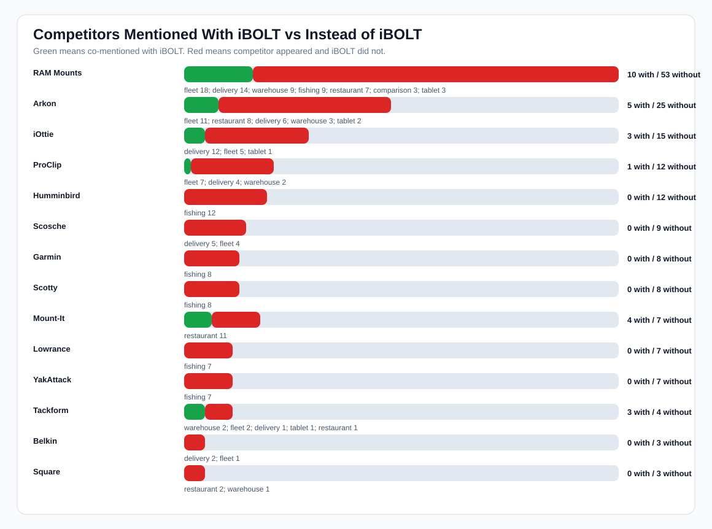
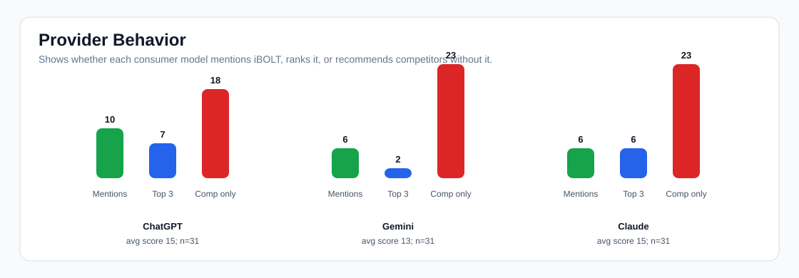
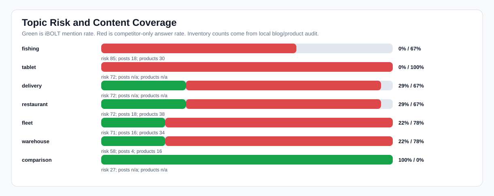

iBOLT AI Mention Landscape
Read this as directional AI visibility evidence. This benchmark stores provider scores, brand detection, rank, citations, competitors, and analysis notes. It does not store full answer text, so this report measures mention/co-mention/displacement patterns rather than quoting entire AI answers.
AI answers tested
93
31 prompts across 3 providers
iBOLT mentions
22/93
24% overall
Non-branded mentions
4/75
5% on generic prompts
Competitor-only answers
68
raw answer detector count
Co-mentioned answers
18
iBOLT plus at least one competitor
Citation rate
0/93
0% in this run
Top-3 iBOLT picks
15/93
16%
Catalog product aliases
8
actual local product aliases
Charts



Competitor Landscape
| Brand | Answers | With iBOLT | Without iBOLT | Co-mention | Categories | Lost prompts |
|---|---|---|---|---|---|---|
| RAM Mounts | 63 | 10 | 53 | 16% | fleet 18; delivery 14; warehouse 9; fishing 9; restaurant 7; comparison 3; tablet 3 | best phone mount for Amazon Flex and delivery vans; best phone mount for delivery drivers; best ELD mount for trucks; magnetic vs clamp phone mounts for delivery work |
| Arkon | 30 | 5 | 25 | 17% | fleet 11; restaurant 8; delivery 6; warehouse 3; tablet 2 | best phone mount for Amazon Flex and delivery vans; best ELD mount for trucks; commercial grade phone mount for delivery drivers; best restaurant tablet mount |
| iOttie | 18 | 3 | 15 | 17% | delivery 12; fleet 5; tablet 1 | best phone mount for Amazon Flex and delivery vans; best phone mount for delivery drivers; magnetic vs clamp phone mounts for delivery work; commercial grade phone mount for delivery drivers |
| ProClip | 13 | 1 | 12 | 8% | fleet 7; delivery 4; warehouse 2 | best phone mount for Amazon Flex and delivery vans; best phone mount for delivery drivers; best ELD mount for trucks; best forklift tablet mount |
| Humminbird | 12 | 0 | 12 | 0% | fishing 12 | best fish finder mount for small boat; best kayak fish finder mount; best budget fish finder mount; best fish finder |
| Scosche | 9 | 0 | 9 | 0% | delivery 5; fleet 4 | best phone mount for Amazon Flex and delivery vans; best phone mount for delivery drivers; best ELD mount for trucks; magnetic vs clamp phone mounts for delivery work |
| Garmin | 8 | 0 | 8 | 0% | fishing 8 | best fish finder mount for small boat; best kayak fish finder mount; best fish finder; best fish finder in water |
| Scotty | 8 | 0 | 8 | 0% | fishing 8 | best fish finder mount for small boat; best kayak fish finder mount; best budget fish finder mount |
| Mount-It | 11 | 4 | 7 | 36% | restaurant 11 | best restaurant tablet mount; best tablet mount for restaurant POS and delivery apps; best multi tablet mount; best locking tablet stand for food trucks and quick service restaurants |
| Lowrance | 7 | 0 | 7 | 0% | fishing 7 | best fish finder mount for small boat; best kayak fish finder mount; best fish finder; best fish finder in water |
| YakAttack | 7 | 0 | 7 | 0% | fishing 7 | best fish finder mount for small boat; best kayak fish finder mount; best budget fish finder mount |
| Tackform | 7 | 3 | 4 | 43% | warehouse 2; fleet 2; delivery 1; tablet 1; restaurant 1 | best locking phone mount for shared delivery vehicles; best heavy duty vehicle phone mount; best tablet mount; best phone mount for construction vehicles and work trucks |
Raw Detector Differences
These brands/counts come from raw result rows and explain where the raw extraction differs from the normalized competitive matrix. Use them for diagnosis, not as the main scorecard.
| Brand | Raw answers | Matrix answers | Diff | Raw with iBOLT | Raw without iBOLT | Raw categories |
|---|---|---|---|---|---|---|
| CTA Digital | 17 | 0 | 17 | 3 | 14 | restaurant 14; tablet 2; warehouse 1 |
| RAM Mounts | 71 | 63 | 8 | 13 | 58 | fleet 18; delivery 15; restaurant 13; fishing 10; warehouse 9; comparison 3 |
| Havis | 5 | 0 | 5 | 0 | 5 | warehouse 5 |
| Heckler | 3 | 0 | 3 | 0 | 3 | restaurant 3 |
| Zebra | 3 | 0 | 3 | 0 | 3 | warehouse 3 |
| Kensington | 2 | 0 | 2 | 1 | 1 | restaurant 2 |
| Mount-It | 10 | 11 | -1 | 3 | 7 | restaurant 10 |
Provider and Category Scorecard
| Provider | Category | Avg score | Mention | Top 3 | Competitor-only | Top competitors |
|---|---|---|---|---|---|---|
| ChatGPT | tablet | 0 | 0% | 0% | 100% | Arkon 1; CTA Digital 1; RAM Mounts 1; Tackform 1 |
| ChatGPT | delivery | 15 | 29% | 29% | 71% | iOttie 6; RAM Mounts 5; Arkon 2; Tackform 1 |
| ChatGPT | fleet | 14 | 33% | 17% | 67% | RAM Mounts 6; Arkon 3; iOttie 3; ProClip 2; Tackform 2 |
| ChatGPT | fishing | 0 | 0% | 0% | 60% | RAM Mounts 3 |
| ChatGPT | restaurant | 19 | 38% | 25% | 50% | CTA Digital 6; Arkon 5; Mount-It 5; Heckler 2; Bouncepad 1; Kensington 1 |
| ChatGPT | warehouse | 30 | 67% | 33% | 33% | RAM Mounts 3; Arkon 2; Tackform 2; CTA Digital 1; Havis 1; ProClip 1 |
| ChatGPT | comparison | 45 | 100% | 100% | 0% | RAM Mounts 1 |
| Claude | tablet | 0 | 0% | 0% | 100% | Arkon 1; RAM Mounts 1 |
| Claude | warehouse | 10 | 0% | 0% | 100% | RAM Mounts 3; Havis 2; Zebra 2 |
| Claude | fleet | 13 | 17% | 17% | 83% | RAM Mounts 6; ProClip 5; Arkon 4; iOttie 1 |
| Claude | restaurant | 20 | 25% | 25% | 75% | CTA Digital 5; RAM Mounts 4; Mount-It 3; Arkon 2; Bouncepad 2; Square 2 |
| Claude | delivery | 19 | 29% | 29% | 71% | RAM Mounts 5; iOttie 4; Arkon 3; ProClip 2 |
| Claude | fishing | 2 | 0% | 0% | 60% | RAM Mounts 3 |
| Claude | comparison | 45 | 100% | 100% | 0% | RAM Mounts 1 |
| Gemini | tablet | 0 | 0% | 0% | 100% | CTA Digital 1; iOttie 1; RAM Mounts 1 |
| Gemini | warehouse | 10 | 0% | 0% | 100% | RAM Mounts 3; Havis 2; Arkon 1; ProClip 1; Square 1 |
| Gemini | fleet | 11 | 17% | 17% | 83% | RAM Mounts 6; Arkon 4; iOttie 1 |
| Gemini | fishing | 2 | 0% | 0% | 80% | RAM Mounts 4 |
| Gemini | restaurant | 18 | 25% | 13% | 75% | RAM Mounts 8; CTA Digital 3; Mount-It 2; Arkon 1; Bouncepad 1; Heckler 1 |
| Gemini | delivery | 14 | 29% | 0% | 57% | RAM Mounts 5; iOttie 2; ProClip 2; Arkon 1; Peak Design 1 |
| Gemini | comparison | 45 | 100% | 0% | 0% | RAM Mounts 1 |
Topic Risk
| Topic | Risk | Avg score | Mention | Competitor-only | Posts | Products | Top competitors |
|---|---|---|---|---|---|---|---|
| fishing | 85 | 1 | 0% | 67% | 18 | 30 | RAM Mounts 10 |
| tablet | 72 | 0 | 0% | 100% | RAM Mounts 3; Arkon 2; CTA Digital 2; iOttie 1; Tackform 1 | ||
| delivery | 72 | 16 | 29% | 67% | RAM Mounts 15; iOttie 12; Arkon 6; ProClip 4; Peak Design 1; Tackform 1 | ||
| restaurant | 72 | 19 | 29% | 67% | 18 | 38 | CTA Digital 14; RAM Mounts 13; Mount-It 10; Arkon 8; Bouncepad 4; Heckler 3; Kensington 2 |
| fleet | 71 | 12 | 22% | 78% | 16 | 34 | RAM Mounts 18; Arkon 11; ProClip 7; iOttie 5; Tackform 2 |
| warehouse | 58 | 17 | 22% | 78% | 4 | 16 | RAM Mounts 9; Havis 5; Arkon 3; Zebra 3; ProClip 2; Tackform 2; CTA Digital 1 |
| comparison | 27 | 45 | 100% | 0% | RAM Mounts 3 |
Highest Query Gaps
| Prompt | Topic | Opp. | AI score | Mention | Competitors | Mapped page | Missing structure |
|---|---|---|---|---|---|---|---|
| best tablet mount | tablet | 97 | 0 | 0% | RAM Mounts; Arkon; CTA Digital; iOttie; Tackform | Best Restaurant Tablet Mount in 2026: POS Stands, Delivery App Stations, and Multi-Tablet Solutions Compared | quick answer; image alt text |
| best heavy duty vehicle phone mount | fleet | 96 | 7 | 0% | Arkon; RAM Mounts; iOttie; ProClip; Tackform | Rough Water Phone Mount for Boat: Heavy-Duty Solutions That Handle the Chop | quick answer; comparison block; image alt text |
| best multi tablet mount | restaurant | 96 | 3 | 0% | CTA Digital; Mount-It; RAM Mounts; Arkon | Best Restaurant Tablet Mount in 2026: POS Stands, Delivery App Stations, and Multi-Tablet Solutions Compared | quick answer; image alt text |
| best phone mount for Amazon Flex and delivery vans | delivery | 94 | 7 | 0% | RAM Mounts; iOttie; Arkon; ProClip | Best Phone Mount for Amazon Flex and Delivery Vans | FAQ schema; quick answer; image alt text |
| best phone mount for Instacart and grocery delivery drivers | delivery | 89 | 0 | 0% | iOttie; RAM Mounts; Peak Design | Best Phone Mount for Instacart and Grocery Delivery Drivers | FAQ schema; quick answer; comparison block; image alt text |
| best phone mount for construction vehicles and work trucks | fleet | 88 | 3 | 0% | RAM Mounts; Arkon; iOttie; ProClip; Tackform | Best Phone Mount for Construction Vehicles and Work Trucks | FAQ schema; quick answer; comparison block; image alt text |
| best fish finder | fishing | 87 | 0 | 0% | Best Garmin Fish Finder Mount: How to Choose the Right Setup for Your Boat or Kayak | quick answer; image alt text | |
| best fish finder in water | fishing | 87 | 0 | 0% | RAM Mounts | Best Garmin Fish Finder Mount: How to Choose the Right Setup for Your Boat or Kayak | quick answer; image alt text |
| best fish finder mount for small boat | fishing | 87 | 0 | 0% | RAM Mounts | Best Fish Finder Mount for Small Boats: Comparison and Buyer's Guide | FAQ schema; quick answer; image alt text |
| best phone mount for delivery drivers | fleet | 87 | 0 | 0% | iOttie; RAM Mounts; ProClip | Best Phone Mount for Delivery Drivers | Article/BlogPosting schema |
| commercial grade phone mount for delivery drivers | delivery | 87 | 0 | 0% | RAM Mounts; Arkon; ProClip; iOttie | Commercial-Grade Phone Mounts for Delivery Drivers | Article/BlogPosting schema |
| best budget fish finder mount | fishing | 86 | 3 | 0% | RAM Mounts | Best Garmin Fish Finder Mount: How to Choose the Right Setup for Your Boat or Kayak | quick answer; image alt text |
| best kayak fish finder mount | fishing | 86 | 3 | 0% | RAM Mounts | Choosing the Best Kayak Fish Finder Mount for Secure and Convenient Fishing | Article/BlogPosting schema |
| best tablet mount for restaurant POS and delivery apps | restaurant | 86 | 7 | 0% | CTA Digital; Heckler; Arkon; Mount-It; RAM Mounts; Square | Best Tablet Mount for Restaurant POS and Delivery Apps | FAQ schema; quick answer; comparison block; image alt text |
| best barcode scanner mount for forklift | warehouse | 84 | 7 | 0% | Havis; RAM Mounts; Zebra; Arkon; ProClip; Square | Barcode Scanner Mounts | FAQ schema; quick answer; image alt text |
| best restaurant tablet mount | restaurant | 84 | 7 | 0% | CTA Digital; Mount-It; RAM Mounts; Arkon; Bouncepad | Best Restaurant Tablet Mount in 2026: POS Stands, Delivery App Stations, and Multi-Tablet Solutions Compared | quick answer; image alt text |
| best ELD mount for trucks | fleet | 83 | 3 | 0% | Arkon; RAM Mounts; ProClip | Best Tablet and Phone Mounts for Trucks and ELD Compliance (2026) | FAQ schema; image alt text |
| best locking phone mount for shared delivery vehicles | delivery | 83 | 3 | 0% | Arkon; RAM Mounts; iOttie; ProClip; Tackform | Best Locking Phone Mount for Shared Delivery Vehicles | FAQ schema; image alt text |
Lost Answer Patterns
| Provider | Prompt | Topic | Competitors named | Recommended fix |
|---|---|---|---|---|
| ChatGPT | best barcode scanner mount for forklift | warehouse | RAM Mounts; Havis; Zebra; ProClip | add query-exact quick answer; add FAQ schema; counter RAM Mounts, Havis, Zebra |
| ChatGPT | best heavy duty vehicle phone mount | fleet | RAM Mounts; iOttie; Arkon; Tackform | add query-exact quick answer; add competitor comparison; counter RAM Mounts, iOttie, Arkon |
| ChatGPT | best locking phone mount for shared delivery vehicles | delivery | RAM Mounts; iOttie; Arkon; Tackform | add FAQ schema; counter RAM Mounts, iOttie, Arkon |
| ChatGPT | best locking tablet stand for food trucks and quick service restaurants | restaurant | Mount-It; CTA Digital; Heckler; Kensington | add query-exact quick answer; add FAQ schema; counter Mount-It, CTA Digital, Heckler |
| ChatGPT | best tablet mount | tablet | RAM Mounts; Arkon; Tackform; CTA Digital | add query-exact quick answer; counter RAM Mounts, Arkon, Tackform |
| Claude | best tablet mount for food truck | restaurant | RAM Mounts; Arkon; Square; CTA Digital | add query-exact quick answer; add FAQ schema; add competitor comparison; counter RAM Mounts, Arkon, Square |
| ChatGPT | best tablet mount for restaurant POS and delivery apps | restaurant | Mount-It; Arkon; CTA Digital; Heckler | add query-exact quick answer; add FAQ schema; add competitor comparison; counter Mount-It, Arkon, CTA Digital |
| Gemini | best barcode scanner mount for forklift | warehouse | RAM Mounts; Havis; Arkon; Square | add query-exact quick answer; add FAQ schema; counter RAM Mounts, Havis, Arkon |
| Claude | best restaurant tablet mount | restaurant | RAM Mounts; Mount-It; Bouncepad; CTA Digital | add query-exact quick answer; counter RAM Mounts, Mount-It, Bouncepad |
| Claude | best drill base phone mount for semi trucks | fleet | RAM Mounts; Arkon; ProClip | add query-exact quick answer; add FAQ schema; counter RAM Mounts, Arkon, ProClip |
| ChatGPT | best ELD mount for trucks | fleet | RAM Mounts; Arkon; ProClip | add FAQ schema; counter RAM Mounts, Arkon, ProClip |
| Claude | best locking phone mount for shared delivery vehicles | delivery | RAM Mounts; Arkon; ProClip | add FAQ schema; counter RAM Mounts, Arkon, ProClip |
| ChatGPT | best multi tablet mount | restaurant | Mount-It; Arkon; CTA Digital | add query-exact quick answer; counter Mount-It, Arkon, CTA Digital |
| Claude | best multi tablet mount | restaurant | RAM Mounts; Mount-It; CTA Digital | add query-exact quick answer; counter RAM Mounts, Mount-It, CTA Digital |
| ChatGPT | best phone mount for construction vehicles and work trucks | fleet | RAM Mounts; iOttie; Tackform | add query-exact quick answer; add FAQ schema; add competitor comparison; counter RAM Mounts, iOttie, Tackform |
| Claude | best phone mount for delivery drivers | fleet | RAM Mounts; iOttie; ProClip | strengthen product recommendation and citations; counter RAM Mounts, iOttie, ProClip |
| Gemini | best phone mount for Instacart and grocery delivery drivers | delivery | RAM Mounts; iOttie; Peak Design | add query-exact quick answer; add FAQ schema; add competitor comparison; counter RAM Mounts, iOttie, Peak Design |
| ChatGPT | best restaurant tablet mount | restaurant | Mount-It; Arkon; CTA Digital | add query-exact quick answer; counter Mount-It, Arkon, CTA Digital |
| Gemini | best tablet mount | tablet | RAM Mounts; iOttie; CTA Digital | add query-exact quick answer; counter RAM Mounts, iOttie, CTA Digital |
| ChatGPT | commercial grade phone mount for delivery drivers | delivery | RAM Mounts; iOttie; Arkon | strengthen product recommendation and citations; counter RAM Mounts, iOttie, Arkon |
Page Edit Queue
| Priority | Page | Topic | Prompts | Page score | Mapped prompts | Concrete edit |
|---|---|---|---|---|---|---|
| 107 | Rough Water Phone Mount for Boat: Heavy-Duty Solutions That Handle the Chop | fleet | 1 | 76 | best heavy duty vehicle phone mount | open with a 2 to 4 sentence answer block; add direct comparison/tradeoff section; fix product image alt text; name and differentiate from Arkon, RAM Mounts, iOttie, ProClip |
| 104 | Best Restaurant Tablet Mount in 2026: POS Stands, Delivery App Stations, and Multi-Tablet Solutions Compared | tablet | 3 | 84 | best tablet mount; best multi tablet mount; best restaurant tablet mount | open with a 2 to 4 sentence answer block; fix product image alt text; name and differentiate from RAM Mounts, Arkon, CTA Digital, iOttie |
| 100 | Best Phone Mount for Instacart and Grocery Delivery Drivers | delivery | 1 | 76 | best phone mount for Instacart and grocery delivery drivers | open with a 2 to 4 sentence answer block; add FAQ section plus JSON-LD FAQPage schema; add direct comparison/tradeoff section; fix product image alt text; name and differentiate from iOttie, RAM Mounts, Peak Design |
| 99 | Best Phone Mount for Construction Vehicles and Work Trucks | fleet | 1 | 76 | best phone mount for construction vehicles and work trucks | open with a 2 to 4 sentence answer block; add FAQ section plus JSON-LD FAQPage schema; add direct comparison/tradeoff section; fix product image alt text; name and differentiate from RAM Mounts, Arkon, iOttie, ProClip |
| 97 | Best Phone Mount for Amazon Flex and Delivery Vans | delivery | 1 | 84 | best phone mount for Amazon Flex and delivery vans | open with a 2 to 4 sentence answer block; add FAQ section plus JSON-LD FAQPage schema; fix product image alt text; name and differentiate from RAM Mounts, iOttie, Arkon, ProClip |
| 97 | Best Tablet Mount for Restaurant POS and Delivery Apps | restaurant | 1 | 76 | best tablet mount for restaurant POS and delivery apps | open with a 2 to 4 sentence answer block; add FAQ section plus JSON-LD FAQPage schema; add direct comparison/tradeoff section; fix product image alt text; name and differentiate from CTA Digital, Heckler, Arkon, Mount-It |
| 94 | Best Garmin Fish Finder Mount: How to Choose the Right Setup for Your Boat or Kayak | fishing | 3 | 84 | best fish finder; best fish finder in water; best budget fish finder mount | open with a 2 to 4 sentence answer block; fix product image alt text; name and differentiate from RAM Mounts |
| 91 | Best Phone Mount for Delivery Drivers | fleet | 1 | 83 | best phone mount for delivery drivers | name and differentiate from iOttie, RAM Mounts, ProClip |
| 91 | Commercial-Grade Phone Mounts for Delivery Drivers | delivery | 1 | 83 | commercial grade phone mount for delivery drivers | name and differentiate from RAM Mounts, Arkon, ProClip, iOttie |
| 90 | Best Fish Finder Mount for Small Boats: Comparison and Buyer's Guide | fishing | 1 | 84 | best fish finder mount for small boat | open with a 2 to 4 sentence answer block; add FAQ section plus JSON-LD FAQPage schema; fix product image alt text; name and differentiate from RAM Mounts |
| 90 | Choosing the Best Kayak Fish Finder Mount for Secure and Convenient Fishing | fishing | 1 | 83 | best kayak fish finder mount | name and differentiate from RAM Mounts |
| 89 | How to Set Up Multiple Tablets for DoorDash, Uber Eats, and Grubhub | restaurant | 1 | 76 | set up multiple tablets for DoorDash Uber Eats and Grubhub | open with a 2 to 4 sentence answer block; add FAQ section plus JSON-LD FAQPage schema; add direct comparison/tradeoff section; fix product image alt text; name and differentiate from RAM Mounts, Arkon |
| 87 | Barcode Scanner Mounts | warehouse | 1 | 84 | best barcode scanner mount for forklift | open with a 2 to 4 sentence answer block; add FAQ section plus JSON-LD FAQPage schema; fix product image alt text; name and differentiate from Havis, RAM Mounts, Zebra, Arkon |
| 85 | Best Locking Phone Mount for Shared Delivery Vehicles | delivery | 1 | 94 | best locking phone mount for shared delivery vehicles | add FAQ section plus JSON-LD FAQPage schema; fix product image alt text; name and differentiate from Arkon, RAM Mounts, iOttie, ProClip |
| 85 | Best Tablet and Phone Mounts for Trucks and ELD Compliance (2026) | fleet | 1 | 94 | best ELD mount for trucks | add FAQ section plus JSON-LD FAQPage schema; fix product image alt text; name and differentiate from Arkon, RAM Mounts, ProClip |